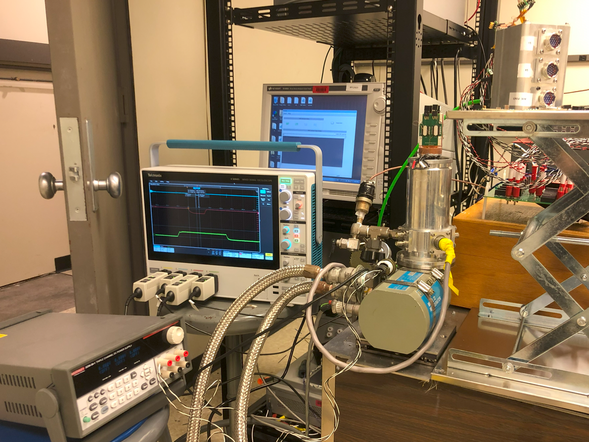
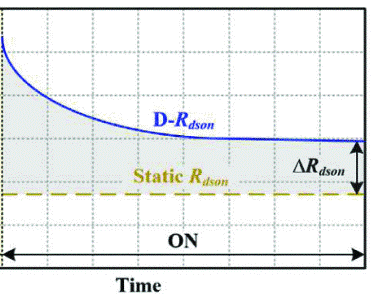
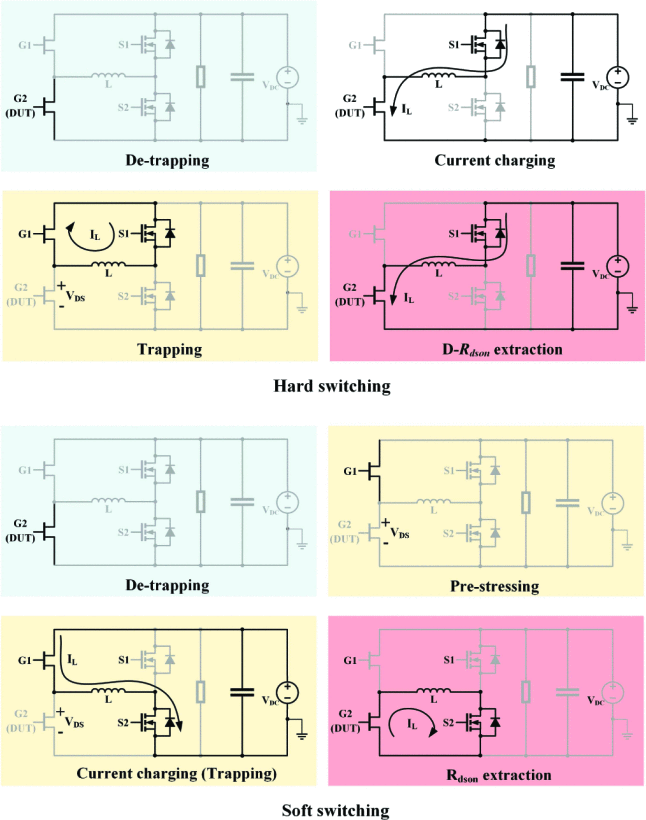

Hello, I am
Dilip Rana
I am currently a
PhD Candidate & Researcher
focusing on
Power Electronics
specificically working on the
Reliability Characterization of
GaN Power Devices at
Cryogenic Temperatures
Quick Links:
or email me directly to
ranad@rpi.edu
Experience
Graduate Research Assistant
Jan 2024 - Present (Expected Graduation: 2028)
Rensselaer Polytechnic Institute

ExPERT Team
Troy, New York, Unites States
I am currently a graduate research assistant working with Prof. Zheyu Zhang. Currently, I am honored to be involved in a NASA-funded project focused on evaluating the suitability of GaN HEMTs for future lunar missions. My work involves conducting stress tests that replicate lunar environmental conditions and assessing device performance to support the design of next-generation power converters. My research centers on the reliability assessment of GaN HEMTs, with a strong focus on understanding their behavior under extreme operating conditions.

Embedded Hardware Engineer
Jan 2022 - Dec 2023
Yatri Motorcycles
Budhanilkantha, Kathmandu, Nepal
Following a three-month internship, I joined Yatri Motorcycles—Nepal’s first and only electric two-wheeler startup—as a full-time Embedded Hardware Engineer. I was involved in the design, testing, and implementation of critical hardware components for vehicle embedded systems, including the Vehicle Control Unit (VCU), power relay boards, and more. This role required close collaboration with multidisciplinary teams for system-level testing and design validation. Seeing these developments successfully integrated into the final product was a highly rewarding experience.
Projects
Jan 2025 - Present
Reliability Characterization of Commercial GaN Power Semiconductors
To understand the degradation of GaN HEMTs under actual power converter operating conditions across a wide range of environments, reliability tests are performed on commercial GaN HEMTs.
What:
Reliability characterization of commercial GaN HEMTs operating in emulated lunar envinronment- from 50K to 400K.
How:
How:
- An environmental chamber using liquid helium based cryocooler and heater to achieve required temperature range
- Design of realistic stress emulation platform with online monitoring
- Periodic offline characterization for I-V characteristics extraction
Jan 2024 - Jan 2025
Static Characterization of Commercial GaN Power Semiconductors

Since prior studies showed promising GaN HEMT performance beyond manufacturer-specified temperature limits, we conducted static characterization across these extreme ranges. This allowed us to examine temperature-dependent trends in key device parameters not covered by existing specifications.
Collaborators:
Purushottam Khadka, Saumil Shivdikar Chandrakant
What: Static characterization of commercial GaN HEMTs from major vendors at 50-400K.
How:
What: Static characterization of commercial GaN HEMTs from major vendors at 50-400K.
How:
- Used commercial curve tracer for static charctierzation : I-V and leakage characterization
- Use of cryocooler based environmental chamber to achieve desired temperatures
- Design of automated setup to cycle temperatures and characterize 4 samples consequently
- Characterization of commercial GaN HEMTs from major vendors at targeted temperatures of 50-400K.
- Positive, negaive and leakage characterization of samples including transfer characteristics.
June 2021 - Apr 2022
Wireless Power Transfer: Electric Scooter based Design
For our year-long undergraduate capstone project, we designed and optimized a wireless power transfer system for a commercial electric scooter. We successfully demonstrated a working hardware prototype, which was well received by the department.
Collaborators: Peter Multiverse (Ganesh Rai), Abinash Man Karmacharya and Anjana Shrestha
What: Simulation and hardware prototype development of inductive resontant coupling based wireless power transfersystem for electric scooter - transfering power from ground pad to coil at base of the scooter.
How:
What: Simulation and hardware prototype development of inductive resontant coupling based wireless power transfersystem for electric scooter - transfering power from ground pad to coil at base of the scooter.
How:
- Design and optimization of coil design at given constraints in COMSOL Multiphysics Tool
- Design of half bridge inverter with inductive power transfer using S-S topology
- Design of gate driver circuits using isolated-tranformer topology
- Development of hardware prototype using matrix board and off the shelf parts
- Successful design and demonstration of working prototype on project defence
- Optimized coil design within dimensional constraints and limiting maximum flux density to 80 mT
- Working hardware prototype with power transfered upto 150W achieving maximum power transfer efficiency of 90%
Dec 2019 - Jan 2020
Induction Heater Design and Case Study
As part of an energy hackathon organized to explore sustainable solutions, we studied the feasibility of replacing traditional LPG-based cooking in the Kathmandu Valley with an induction heater-based approach. Our analysis considered projected energy generation and demand trends over the next five years. To support the case for local adoption, we built a functional induction heater prototype demonstrating the potential for in-country production. Our team won the hackathon in the efficiency category.
Team Name: NT RAYS
Collaborators: Abinash Man Karmacharya, Peter Multiverse (Ganesh Rai), Anjana Shrestha
What: Case study of induction heater cooking to replace LPG cooking in Kathmandu Valley with in-country manufactoring
How:
Collaborators: Abinash Man Karmacharya, Peter Multiverse (Ganesh Rai), Anjana Shrestha
What: Case study of induction heater cooking to replace LPG cooking in Kathmandu Valley with in-country manufactoring
How:
- Use of official Nepal Electricity Authority (NEA) data for demand and generation of electrical energy
- Local manufactoring of induction heaters for cost effective heaters production
- Comparison and feasibility of the induction heater based solution at peak loading hours
- With clear upward generation trend surpassing electricity consumption demand, the study showed that future generation is capable of providing heater cooking demand
- Comparing cooking cost to LPG cooking revealed about 50% save in energy cost
- Updating grid side stability components and infrastructure revealed the shorter payback period
Feb 2018 - Mar 2018
Ferrous Black Body based Concentrating Solar
In Himalayan regions, solar panels operate under significantly lower insolation, reducing their power output and overall feasibility. To address this, we designed a system that improves panel efficiency by concentrating solar rays and minimizing reflection losses through effective light trapping.
Collaborators: Mahesh Sharma, Keshav Sharma and Lal Babu Mahato
What: Ferrous black body inspired solar rays concentraing system to improve utility of solar panels
How:
What: Ferrous black body inspired solar rays concentraing system to improve utility of solar panels
How:
- Large parabolic rays concentraing disc panel to increase solar intensity to panels
- Solar box to trap incident rays to reduce losses in reflection
- Use of mirros to fill in gaps to redirect rays
- 50% increase in solar panel output
Publications
March 2025
Automated Characterization Platform for Comprehensive Dynamic Rdson Assessment of GaN HEMTs From 50 K to 400 K


Abstract: Gallium Nitride (GaN) HEMTs demonstrate superior performance at cryogenic temperatures, making them promising candidates for lunar missions where temperatures vary from 50 to 400 K. However, the current collapse effect increases dynamic on-state resistance (Rdson) during switching, leading to additional energy loss, especially in high-frequency applications. To conduct a comprehensive study with high efficiency, we developed an automated characterization platform for dynamic Rdson extraction under multi-stressor conditions. The design considerations include 1) programmable stressors such as temperatures, voltages, currents, etc., 2) electrothermal-mechanical compatibility with the cryocooler across a wide temperature range, and 3) software framework for full automation. Results for a commercial GaN HEMT show that dynamic Rdson varies non-monotonically with temperature increment, as it increases at 50 - 180 K and then decreases a 180 - 400 K. Dynamic Rdson follows this trend at both hard- and soft-switching, but is more sensitive to stressors at hard switching, while remaining nearly unchanged at soft switching, indicating that, under this testing plan that applies low stressing voltages, hot electron effect makes the major contribution to dynamic Rdson.
Contact info

Thank you for visiting my website! I look forward to connecting with you.